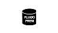
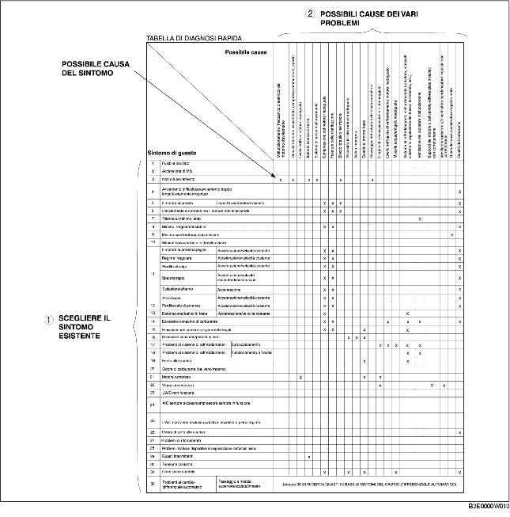

COME USARE QUESTO MANUALE
B3E000000001W01
Argomenti trattati
• Questo manuale contiene tutte le procedure necessarie per l'assistenza del veicolo. Le procedure si dividono nelle cinque operazioni base seguenti:
-
- Rimozione/installazione
-
- Smontaggio/montaggio
-
- Sostituzione
-
- Ispezione
-
- Regolazione
• Le descrizioni delle operazioni più semplici, la cui esecuzione è intuitiva (esempio, rimozione/installazione di parti semplici, sollevamento del veicolo, pulizie e ispezioni visive) sono state omesse.
Procedura d'assistenza
Ispezione, regolazione
-
• Le procedure di ispezione e di regolazione si suddividono in passi. I punti importanti riguardanti la collocazione e il contenuto delle procedure sono descritti dettagliatamente e mostrati nelle figure.
Procedura di riparazione
1. La maggior parte delle operazioni di riparazione inizia con una figura che fornisce una panoramica della parte in esame. In essa si identificano i componenti, si mostra come avviene il montaggio delle parti e si descrivono le ispezioni visive. In ogni caso, le istruzioni fornite riguardano solo quelle procedure di rimozione/installazione che devono essere eseguite secondo una determinata metodologia.
2. Nella vista panoramica vengono indicati i materiali di consumo, le coppie di serraggio ed i simboli che identificano olio, grassi e sigillanti. Vengono inoltre indicati i simboli che identificano le parti che richiedono l'utilizzo di attrezzi speciali.
3. I passi procedurali sono numerati, ed il numero che contraddistingue ciascuno di essi è lo stesso numero che identifica sulla figura la parte trattata. Occasionalmente, in riferimento ad una procedura si possono trovare puntualizzazioni importanti o informazioni supplementari. È importante fare riferimento a queste informazioni durante le operazioni.
Simboli
• Vengono usati otto simboli per identificare oli, grassi, fluidi e sigillanti, nonché l'utilizzo di SST o strumenti equivalenti. Questi simboli mostrano i punti di applicazione o di utilizzo di tali materiali all'interno della procedura.
|
Simbolo
|
Significato
|
Tipologia
|
|
|
Applicare olio
|
Olio motore o olio per ingranaggi nuovo di tipo appropriato
|
|

|
Applicare fluido per freni
|
Fluido per freni nuovo di tipo appropriato
|
|

|
Applicare fluido per cambio/cambio-differenziale automatico
|
Fluido per cambio/cambio-differenziale automatico nuovo di tipo appropriato
|
|

|
Applicare grasso
|
Grasso di tipo appropriato
|
|
|
Applicare sigillante
|
Sigillante di tipo appropriato
|
|

|
Applicare vaselina
|
Vaselina di tipo appropriato
|
|

|
Sostituire la parte
|
O-ring, guarnizioni, ecc.
|
|

|
Usare lo SST o uno strumento equivalente
|
Attrezzi di tipo appropriato
|
Avvisi
• In questo manuale si possono trovare un certo numero di informazioni con le intestazioni Attenzione, Avvertenza, Nota, Specifiche e Limiti superiori e inferiori.
Attenzione
-
• Un'Attenzione indica una situazione in cui, se l'attenzione viene ignorata, si può rischiare la vita.
Avvertenza
-
• Un'Avvertenza indica una situazione in cui, se l'avvertenza viene ignorata, si può danneggiare seriamente il veicolo.
Nota
-
• Una Nota fornisce importanti puntualizzazioni che aiutano ad eseguire una determinata operazione.
Specifiche
-
• I valori indicano il campo di tolleranza in caso di controlli o regolazioni.
Limiti superiori ed inferiori
-
• Indicano i limiti di tolleranza superiore ed inferiore che non devono essere superati in caso di controlli o regolazioni.
Procedura di ricerca guasti
Schema base della ricerca guasti
Schema della ricerca guasti per DTC (diagnosi di bordo)
-
• I codici di guasto (DTC) sono dei validi supporti per la riparazione dei guasti difficili da riprodurre. Per una diagnosi precisa e veloce del guasto, eseguire la procedura di diagnosi specifica del DTC in esame.
-
• Durante l'ispezione viene utilizzata la funzione diagnostica di bordo. Quando compare un DTC che specifica la causa del guasto, proseguire l'ispezione in base alle indicazioni della funzione diagnostica di bordo.
Indice dei sintomi
-
• L'indice dei sintomi elenca i sintomi legati a guasti specifici. Selezionare il sintomo che corrisponde o più si avvicina al problema in esame.
Tabella di diagnosi rapida (Se citata)
-
• La tabella di diagnosi rapida elenca tutte le procedure di ispezione e di diagnosi correlate ad una specifica causa di guasto.
Ricerca guasti in base ai sintomi
-
• La ricerca guasti in base ai sintomi permette di localizzare velocemente il guasto analizzando la tipologia del sintomo.
Procedure d'impiego
Utilizzo dell'ispezione base (sezione 05)
-
• Eseguire la procedura di ispezione base prima di iniziare la ricerca guasti in base ai sintomi.
-
• Eseguire i vari passi della procedura nell'ordine indicato.
-
• La colonna dei riferimenti riporta i punti in cui le varie procedure di ispezione base sono descritte in dettaglio.
-
• Sebbene controlli e regolazioni vadano eseguiti come descritto nelle procedure di riferimento, se la causa del guasto viene scoperta durante l'ispezione base proseguire secondo le indicazioni riportate nella colonna delle azioni.
Utilizzo dello schema di ricerca guasti per DTC
-
• Lo schema della ricerca guasti per DTC indica, per ciascun DTC, le procedure di diagnosi, le procedure di ispezione e le azioni correttive.
Utilizzo dell'indice dei sintomi
-
• Nell'indice dei sintomi vengono elencati i vari sintomi di guasto.
-
• Da questo indice può essere ricavato il sintomo di guasto che corrisponde esattamente al problema in esame.
Utilizzo della tabella di diagnosi rapida
-
• La tabella mostra la relazione tra sintomo di guasto e causa.
-
• La tabella permette di restringere velocemente il campo di ricerca. Essa riporta inoltre le cause comuni a più sintomi.
-
• Dalla tabella è possibile, partendo dal sintomo, individuare la causa e selezionare la procedura di ispezione da eseguire.

Utilizzo della ricerca guasti per sintomi
-
• La ricerca guasti per sintomi indica, per ciascun sintomo, le procedure di diagnosi, le procedure di ispezione e le azioni correttive.